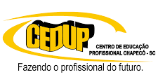
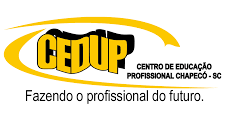

O curso técnico em Desenvolvimento de Sistemas forma profissionais para criar, testar e manter softwares, usando programação, análise e modelagem. Dura de 1 ano e meio e prepara para atuar em empresas de tecnologia e TI.
As disciplinas preparam para desenvolver, implementar e manter sistemas de software, com foco em lógica, programação, análise e modelagem. Também abordam gestão de projetos, trabalho em equipe e boas práticas para garantir qualidade e segurança nas soluções desenvolvidas. Veja todas as disciplinas clicando aqui!
Os professores do curso técnico em desenvolvimento de sistemas geralmente possuem experiência prática no mercado de tecnologia, combinando conhecimentos teóricos e aplicações reais para facilitar o aprendizado dos alunos. Eles buscam preparar os estudantes para os desafios do desenvolvimento de software, estimulando tanto a parte técnica quanto o raciocínio lógico. Já os alunos são pessoas motivadas, com interesse em tecnologia e programação, que buscam uma formação rápida e prática para ingressar no mercado de trabalho e desenvolver soluções tecnológicas eficientes.